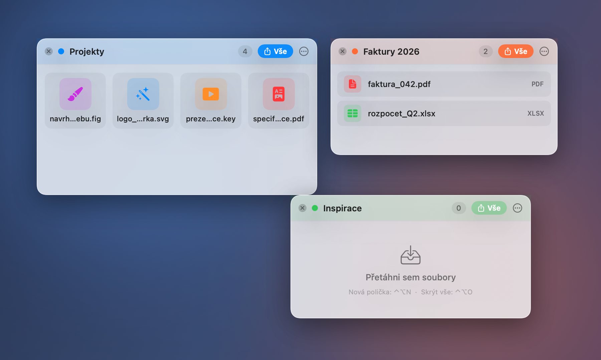
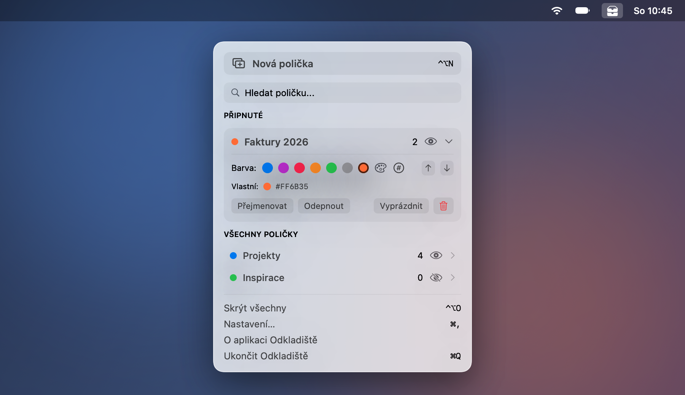
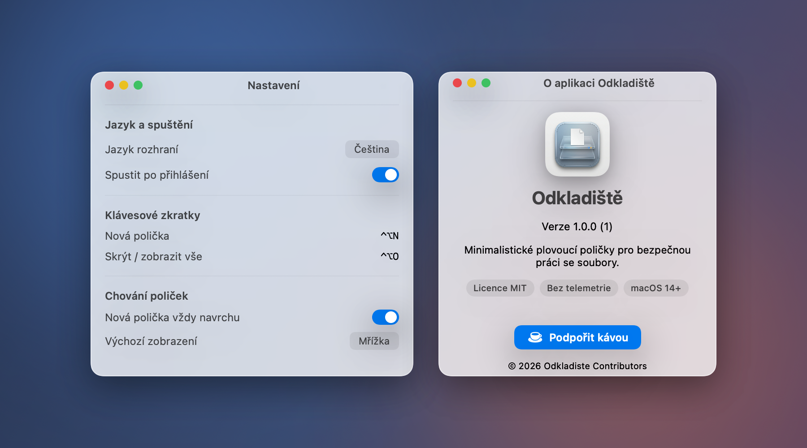

Floating Shelves for Your Files
A minimalist native macOS app for staging and moving files across windows, apps, and displays. Multiple independent shelves instead of a single crowded drop box.

Built for Calm, Focused Work on Mac
A clean native app with zero external dependencies that respects both your files and your privacy.
Multiple Independent Shelves
Every shelf has its own floating window, name, color, size, position, and “Always on Top” toggle.
Safe File References
Files are never duplicated onto a shelf. Removing items or deleting a shelf never deletes original files on disk.
Colors, Custom Hex & Eyedropper
Pick from 6 preset colors, enter any custom #RRGGBB code, or sample colors with the macOS color wheel & eyedropper.
Drag & Drop + “All” Handle
Move or copy items to Finder, Mail, or between shelves. Drag the colored “All” pill to hand off the entire shelf at once.
Quick Look & Shortcuts
Press Space for Quick Look, ⌘F to filter, ⌘Z to Undo, and use global shortcuts ⌃⌥N and ⌃⌥O.
EN / CS & Multi-Display
Instant English and Czech switching in Settings, plus automatic window recovery when external displays disconnect.
Clean Controls in the Menu Bar
Keep every shelf within reach from the menu bar popover, including colors, ordering, and pinning.


Build & Run from Source (2 Minutes)
Requires macOS 14+ and Apple Command Line Tools (full Xcode is not required).
-
One-time setup (if you don’t have Apple developer tools installed yet):
xcode-select --install -
Download, build, and launch:
git clone https://github.com/zyxlit/odkladiste.git cd odkladiste ./scripts/build-app.sh cp -R build/Odkladiste.app /Applications/ open /Applications/Odkladiste.app -
Update to a new version: quit Odkladiště from the menu bar and run:
git pull && ./scripts/build-app.sh rm -rf /Applications/Odkladiste.app && cp -R build/Odkladiste.app /Applications/ open /Applications/Odkladiste.app